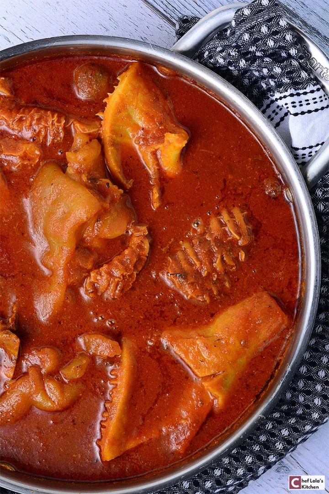

Nigerian Beef Stew

Description
Ingredients
Boiling the Beef
- 2 lbs Beef
- 1 onion medium size [diced]
- 1 bay leaf
- 1 teaspoon curry powder
- 1 teaspoon rosemary or thyme
- 2 teaspoons beef bouillon or chicken bouillon powder or 2 cubes
- salt to taste
- 1 cup water or as needed
The Stew
- 2 Bell peppers large
- 1-3 Scotch bonnet peppers
- 4 Plum tomatoes medium size
- 1 large onion
- 3 cloves Garlic
- 1/2 inch ginger
- 1/4 cup Palm oil
- 1/4 cup olive oil or vegetable oil
- 2 tbsp tomato paste
- 1 to 1½ cups beef stock I used the liquid from cooking the beef
- 1 teaspoon Curry powder
- 1 teaspoon dried thyme
- 1 teaspoon chicken bouillon or beef bouillon
- Salt to taste If needed
Instructions
- Trim off any excess fat from the meat. Rinse a couple of times till the water runs clear.
- Place the beef in a large pot. Add the diced onion, bay leaf, curry powder, rosemary, bouillon powder, and salt. Mix well, cover, and leave to cook on medium heat for 10 minutes.
- Add the water stir and continue to cook on medium heat for another 20 minutes or until the meat becomes tender. (Tougher meat cut will require a longer cooking time)
- When the meat is fully cooked use a sieve to separate the meat from the stock. Reserve the stock.
- Blend the tomatoes, onion, bell peppers, scotch bonnet peppers, garlic, tomato paste, and ginger, and set aside.
- In a large pot add the cooking oil on medium heat. Once the oil is hot but not smoking, add the diced onions and cook for about 3 minutes.
- Add the blended pepper-tomato mixture stir, cover, and leave to cook on medium heat for about 10 minutes, occasionally stirring to prevent burning.
- Stir in the beef stock, thyme, curry powder, and bouillon, and continue to cook for another 10 minutes on medium-low heat.
- Add the cooked beef, taste for salt, and adjust as needed. Cover and leave to simmer on low heat for another 5 minutes or until the stew is thickened to your preference.
- Serve with white rice and fried plantains. Garnish with parsley if desired. Enjoy!